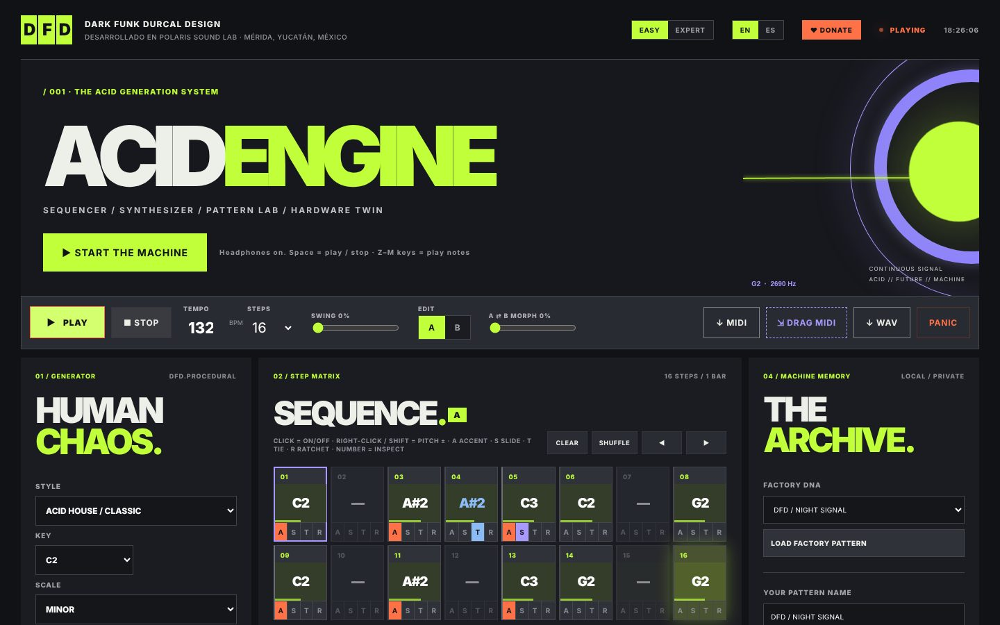
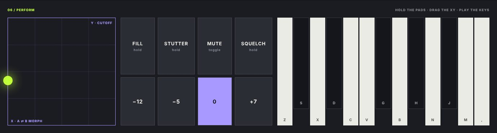
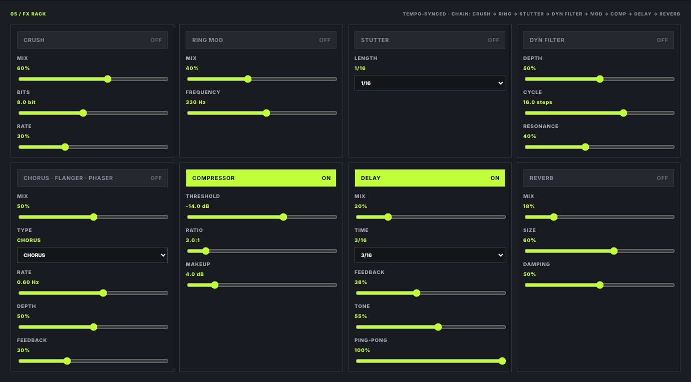

An original acid synthesizer, step sequencer and pattern lab. Squelching lines in every style, from classic acid house to braindance, ready to drop into your track.

Any computer or phone with Chrome, Edge, Firefox or Safari. No install, no account. Web MIDI connects the TB-3 in Chrome / Edge.
AVAILABLEThe same engine as a plugin for Mac (Apple Silicon and Intel) and Windows 10/11, with host sync, MIDI out and drag-and-drop MIDI. Validated with pluginval and auval.
BETA ⬇ DOWNLOAD (MAC · WINDOWS) 📗 MANUAL| ☠ DIRTY LAB | Filthy electro house in one button: distorted saw walls (DIRTY and FIDGET voices), octave riffs, pitch zaps, the sidechain pump, 6 riff families, 9 dirty sounds and 6 big macros. |
| ◉ Generator that grooves | 10 styles: Acid House, Acid Techno 3-3-2, Filter House, Big Beat, Rave, Braindance, Electro, Deep Hypnotic, Electro House Dirty, Bloghouse Fidget. Every line starts on the root, repeats like a real riff and turns around at the end of the bar. DNA lock keeps the notes, rhythm, accents or slides you like. |
| ⚡ A real acid voice | Band-limited saw ⇄ square, sub, noise, a 4-pole resonant ladder filter with bass compensation, accent build-up, glide, two drive stages, oversampling up to 4×. |
| ▦ Deep sequencer | Up to 256 steps: accent, slide, tie, gate, velocity, ratchets, probability, conditions (FILL, 1ST, 1:2…), micro-timing, swing. Two patterns A / B with a morph between them. |
| ✦ 9 tempo-synced FX | Sidechain pump, bit crush, ring mod, stutter, dynamic filter, chorus / flanger / phaser, compressor, ping-pong delay, reverb. |
| ◬ Live | XY pad (morph × cutoff), FILL / STUTTER / MUTE / SQUELCH pads, transpose, playable keys, EASY and EXPERT layers, undo. |
| ⇢ Into your DAW | Export .mid (what you hear is what you get), drag MIDI into Ableton, WAV 48 kHz / 24-bit and stems. |
| ⧉ TB-3 TWIN LINK | USB MIDI with the official MIDI implementation only: play the TB-3 from the sequencer, play the web synth from the TB-3, capture its patterns, back up and restore the active patch (always with confirmation). |

